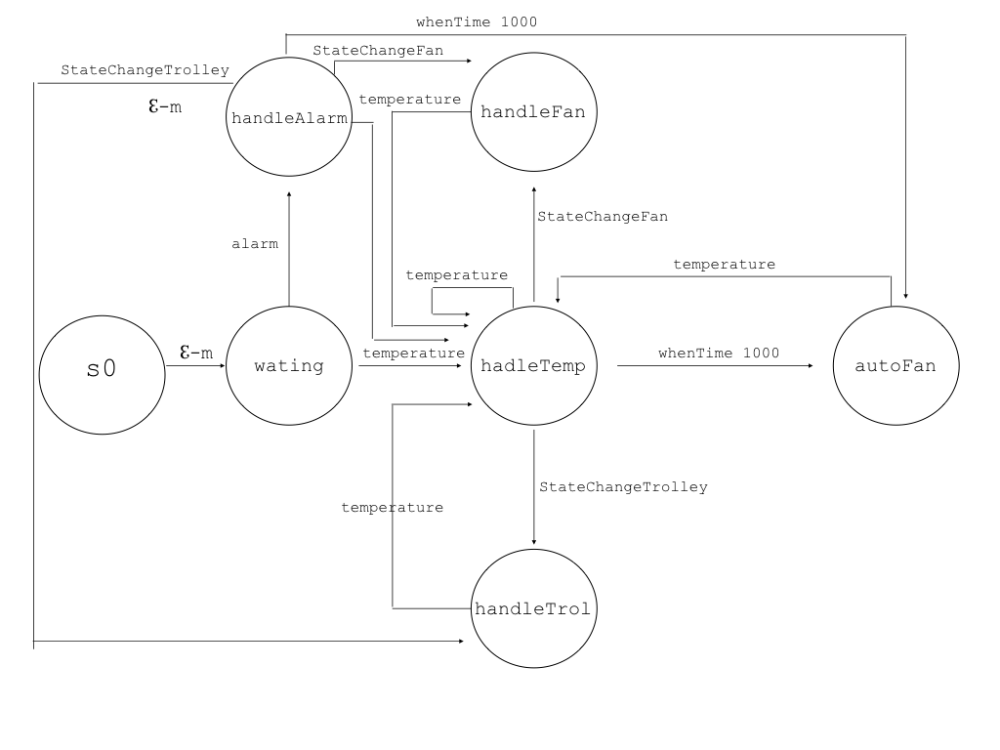

Thermometer
The thermometer as an emitter of event.
|
Event temperature : temperature (T)
Context ctxparkingarea ip [host="localhost" port=8021]
QActor thermometer context ctxparkingarea{
...
emit temperature : temperature ($VALUE)
...
}
|
ParkManagerService
ParkManagerService
The ParkManagerService QActor:
- manage the requests from the clients, excecute them and elaborate the replies;
- manage the parking-area with information of the weightsensor and the outsonar.
|
|
Components comunication
ParkManagerService/TransporTrolley
The ParkManagerService will send the command to the transport-trolley in a asynchronous way to reduce the quantity of messages and prevent the application from waiting for a response.
|
Dispatch cmd : cmd(MOVE)
Context ctxparkingarea ip [host="localhost" port=8021]
QActor parkmnagerservice context ctxparkingarea{
...
forward transporttrolley -m cmd : cmd(w)
...
}
|
Outmanager
|
The Outmanager was modelled as QActor and its aim is to send an alarm (dispatch) when the OUTDOORAREA is still vacated over a DTFREE time.
It is a part of ParkManagerService and it is specialized to manage the outsonar information.
The reason why it is necessary modelled this actor is the implementation of timer and, thus, guarantee the fulfillment of other actions by other components while the timer is going.
|
|
Components comunication
Outmanager/ParkManagerService
The Outmanager will send dispatches to the
ParkManagerService to inform it if the OUTDOORAREA is vacated or not. When it is over the DTFREE the OutManager will send to the ParkingManager an alarm which is a dispatch.
|
Dispatch outfree : outfree(free)
Dispatch alarm : alarm(V)
Context ctxparkingarea ip [host="localhost" port=8021]
QActor outmanager context ctxparkingarea{
...
State work{
...
forward parkmanagerservice -m outfree : outfree (occ)
forward parkmanagerservice -m alarm : alarm(V)
...
}
}
State free {
forward parkmanagerservice -m outfree : outfree (free)
}
}
|
ParkingManager
- The ParkingManager interacts via network with the the thermometer, fan, trolley and the ParkServiceStatusGui.
It is a part of ParkManagerService and it is specialized to manage the parkingmanager human behavior.
In our analysis the existence of the ParkingManager is related to the requirement to stop the transport-trolley which cannot be done by ParkManagerService;
- The ParkingManager should recive the information of the transport-trolley and the fan so its is like an observer too.
|

|
Components comunication
ParkingManager/TransportTrolley
|
The ParkingManager will send the command to the transport-trolley in a asynchronous way to reduce the quantity of messages and prevent the application from waiting for a response.
|
Dispatch trolleystop : trolleystop(V)
Dispatch trolleyresume : trolleyresume(V)
Context ctxparkingarea ip [host="localhost" port=8021]
QActor parkingmanager context ctxparkingarea{
...
forward transporttrolley -m trolleystop : trolleystop(w)
...
forward transporttrolley -m trolleyresume : trolleyresume(w)
}
|
ParkingManager/Fan
The ParkingManager will send the command to the fan in a asynchronous way to reduce the quantity of messages and prevent the application from waiting for a response.
|
Dispatch fanstart: fanstart(V)
Dispatch fanstop : fanstop(V)
Context ctxparkingarea ip [host="localhost" port=8021]
QActor parkmanagerservice context ctxparkingarea {
...
forward fan -m fanstart: fanstart(on)
...
forward fan -m fanstop: fanstop(off)
}
|
ParkingManager
The interaction follow is modelled with events because the receiving is uknown in the requirements and other components could be intrested of what is happening in future.
|
Event warning : warning(V)
Event alarm : alarm(V)
Context ctxparkingarea ip [host="localhost" port=8021]
QActor parkingmanager context ctxparkingarea {
...
emit warning : warning(V)
emit alarm : alarm(V)
}
|
The WebGui
The ParkServiceGui
|
The ParkServiceGui should use by the client to inform the application the intent to enter or take the car. It should also inform the client if he should wait to take the car, or if there aren't any slots in the parking-area, etc.
In this case we will simulate the behaviour of the client: it is an mock QActor.
|

|
Components comunication
ParkingServiceGui/ParkManagerService
The interaction follow the request/response model because when the client send a command the application must answer with helpful information (e.g. SLOTNUM, TOKENID...)
|
Request carenter : carenter(C)
Reply receipt : receipt(I)
Request notifyIn : notifyIn(N)
Reply informIn : informIn(S)
Request pickup : pickup(TOKENID)
Reply ok : ok(O)
Context ctxparkingarea ip [host="localhost" port=8021]
QActor parkingservicegui context ctxparkingarea{
...
request parkmanagerservice -m notifyIn : notifyIn(A)
...
request parkmanagerservice -m carenter : carenter ($SLOTNUM)
...
request parkmanagerservice -m pickup : pickup($TOKENID)
}
QActor parkmanagerservice context ctxparkingarea{
...
replyTo notifyIn with informIn : informIn($SLOTNUM)
...
replyTo carenter with receipt : receipt($TOKENID)
...
replyTo pickup with ok : ok($OUTFREE)
}
|
The ParkServiceStatusGui
|
The ParkServiceStatusGUI should monitor the the system current state. It should ask to the application the information needed. The implementation could be done with a polling mechanism, that is a request/response interaction, but this is only one possible solution. Another one could be a dispatch interaction, or using an observer.
In this case we will simulate the behaviour of the parking-manager(human): it is an mock QActor.
|

|
Components comunication
ParkServiceStatusGui
The interaction follow is modelled with events because the ParkServiceStatusGui operations will processing like a botton which are like an observable in an distribuited system.
|
Event stateChangetrolley : stateChangetrolley (V)
Event stateChangefan : stateChangefan (V)
Context ctxparkingarea ip [host="localhost" port=8021]
QActor parkservicestatusgui context ctxparkingarea {
...
emit stateChangetrolley : stateChangetrolley(stop)
emit stateChangefan : stateChangefan(work)
...
emit stateChangetrolley : stateChangetrolley(work)
emit stateChangefan : stateChangefan(stop)
}
|
Logical Architecture
Testplan
Testplan 1: the testplan should check the correspondence of the movements between the transport-trolley and the basicrobot.
The test will be done by comparing two strings.
- path: are the commands to reach the goal;
- result: are the real commands sending to the DDR robot from the basic robot.
At the end of the execution the two strings should be equals.
The code is the following file: TestPlan1.kt.
Testplan 2: we should simulate and check if the parkservicegui receive the correct Slotnum.
The code is the following file: TestPlan2.kt.
Testplan 3: we should simulate and check if the parkservicestatusgui receive the alarm from the outmanager when the OUTDOORAREA is still vacated over a DTFREE time.
The code is the following file: TestPlan3.kt.
Testplan 4: we should simulate and check if the parkingmanager turn on/off the fan if the temperature is higher/lower than TMAX.
The code is the following file: TestPlan4.kt.
Testplan 5: we should simulate and check if the parkingmanager stop/resume the transport-trolley when the temperaature is higher/lower then TMAX.
The code is the following file: TestPlan5.kt.
Project
WebApplicationPms
The WebApplicationPms will be a system of actors and other components that implements the required automation functions. It is a distributed service accessible via HTTP:
http://localhost:8081
The service communicates with external devices also via MQTT, COAP and TCP.
The WebApplication is in the following folder: it.unibo.WebApplicationPms
Weightsensor
- The device will be simulated using a GUI interface where it is possible to fill in a form the information of weight.
- The GUI will be embedded in a qactor such that it will be transfert in a infrastructure capable to interact in a distribuited system.
- The comunication protocol chosen is MQTT because, nevetherless all the possibilities given by the qactor technology, it is the best one, in this case, to implement the requiremet of the costumer to ask the information to the resource only when they are necessary.
- Furthermore to achieve this requirement the qactor weighsensor was implemented as a filter such that reduce the message exchanged.
mqttBroker "broker.hivemq.com" : 1883 eventTopic "weightsensor/data"
|
mqttBroker "localhost" : 1883 eventTopic "weightsensor/data"
Context ctxweightsensor ip [host="localhost" port=8018]
QActor weightsensor context ctxweightsensor{
...
State working {
println("weihtSensor : working")
[#var Weight = gui.value #]
println(Weight)
[#if(Weight == 0 && carNotDetected == false){
carNotDetected = true
emit("weight", "weight($Weight)")
}else if(carNotDetected == true && Weight != 0){
carNotDetected = false
emit("weight", "weight($Weight)")
}#]
}Transition t0 whenTime 2000 ->working
}
|
Thermometer
- The device will be simulated using a mock qactor, called mockTherm, that will generate random values between 0 and 50. The values will be perceived by another qactor such that the simulated device will be tranfert in a infrastructure capable to interact in a distribuited system, indeed this qactor will communicate to our application by sending a dispatch.
- The dispatch choice was made because we know the recipient and because the asynchronous comunication allows to not to lose temperature information
- Neverthenless it could be verified that there will be an inconsistency between the state of the parkingarea and the application, because of dispatches queque, in real case it will be difficult to happen thanks to the fact that the parkingmanager recived, besides temperature dispatches, only another type of messages only one time when the temperature over/undercome tmax.
|
Context ctxthermometer ip [ host= "localhost" port= 8015 ]
Context ctxparkingarea ip [ host= "127.0.0.1" port=8021 ]
ExternalQActor parkingmanager context ctxparkingarea
QActor thermometer context ctxthermometer{
...
tate handleMsg{
onMsg(temp : temp(T)){
[# var T= payloadArg(0)#]
println("thermometer | work $T")
forward parkingmanager -m temperature : temperature ($T)
}
}Goto work
}
|
Fan
- The device will be simulated using a GUI interface where is possible to view the its state.
- The GUI will be embedded in a qactor such that it will be transfert in a infrastructure capable to interact in a distribuited system.
- The comunication protocol chosen is COAP because it allows to implement the observe pattern. Indeed the fan should observe the state changes of the fanmanager resourced to do its operation because it has a reactive behaviour.
|
Context ctxfan ip [host="localhost" port=8017]
QActor fan context ctxfan{
...
State handleState{
[#stateFan = utility.HandleData().getState("fanmanager")
gui.setState(stateFan)#]
//updateResource[#"stateFa n()"#]
}
Transition t0 whenTime 2000 -> handleState
}
|
Outsonar
- The real sonar, described in the problem analysis, will generate the values as an event emitter. The values will be perceived by another qactor, outsonar, such that avoid an event communication with our application, so it will send dispatches to the outmanager.
- The dispatch choice was made because we know the recipient and because the asynchronous comunication allows to not to lose OUTDOORAREA information
|
Context ctxsonaronrasp ip [host="localhost" port=8070]
Context ctxparkingarea ip [ host= "127.0.0.1" port=8021 ] //insert ip deploy on Pc
ExternalQActor outmanager context ctxparkingarea
CodedQActor sonarsimulator context ctxsonaronrasp className "sonarSimulator"
CodedQActor sonardatasource context ctxsonaronrasp className "sonarHCSR04Support2021"
QActor outsonar context ctxsonaronrasp {
...
State handleSonarData{
printCurrentMessage
[# var DIST=0 #]
println("outsonar | handlemsg")
onMsg( sonar : distance(D) ){
[# DIST = payloadArg(0).toInt() #]
println(DIST)
if[#DIST<20 #]{
forward outmanager -m outsonar : outsonar (O)
[#send = "true"#] //trasformarli in dispatch
}if[#DIST>=20 && send=="true" #]{
forward outmanager -m takecar : takecar(P)
[#send = "false"#] //trasformarli in distpatch
}
}
onMsg( sonar : distance(D) ){
[# val D = payloadArg(0)
#]
println("spono")
emit sonarrobot : sonar($D)*/
}
Transition t0 whenEvent sonar -> handleSonarData
}
|
ParkServiceGui
The ParkServiceGui will be a series of responsive HTML pages with the aim to show what operations the client could be:
parking phase:it is composed by two pages:
- notify in: an html page with a button "notifyIn" pressed by the user to inform the system his intrest to use the service.
- carenter: an html page with a input form where the client should put his email and a button pressed by the user to inform the system that the robot could take the car. The system will use the email to send to the user the link for go to the pick up phase.
pickup phase: it is composed by one page and it is accessible only using the email sending previously. There is only one button "pickup" used to inform the system that the client want take its car. If the system cannot process the command it will inform the client to try later.
The EmailService was implemented to guarantee the right correlation between client and his TOKENID. If the client picked up his car the system is able to recognised and avoid the client to use two times the same link.
|
|
ParkServicStatusGui
The ParkServiceStatusGui will be an responsive and interactive HTML page with the aim to show what is the state of the parkingarea.
It will be composed of two sections:
- output: where are shown the information of the trolley, fan, temperature and if the OUTDOORAREA is still vacated over a DTFREE time;
- input: where the manager could change the state of the fan and the trolley if the temperature over/undercome tmax.
The page will be manage by the ControllerPm implemented using SpringBoot and with the supporting of javascript and Stomp.
|

|
Authentication
- The manager should authenticate himself and define his MANAGER roles, then the manager should see the HTML page.
- The authentication could be done using WebSpringSecurity and defining all the configuration of the application.
- The code is in WebsecuriticonfigWebConfigSecurity.kt.
ControllerWeighSensor
- The ControllerWeightSensor is a controller used to manage the information sending by the weightsensor which simulate the car detection in the INDOORAREA.
- It should forward the INDOORAREA information to the parkmanagerservice but also update the CARENTER button behaviour of the GUI.
- The ControllerWeightSensor receives the weighsensor-data using MQTT because this protocol is able to realize the event based comunication thanks to the characteristic of decoupling sender and receiver.
- The ControllerWeightSensor will send a dispatch to the parkingmanagerservice to avoid that it will wait a response and because it knows the recipient.
mqttBroker "broker.hivemq.com" : 1883 eventTopic "weightsensor/data"
|
@Controller
class ControllerWeighSensor {
@MqttSubscribe(topic = "weightsensor/data" , qos = AT_LEAST_ONCE)
fun subscribe ( payload:String) {
println( "weight = "+payload )
appConnection.sendForward("weightsensor","weight(${payload})", "weightsensor")
stateButtonCarEnter = "Enabled"
}
}
|
ControllerPms
- The ControllerPMS represents the WebApplication controller that responsible for processing incoming requests, preparing a model, and returning the view to be rendered as a response.
- It defines an API with the purpose of creating a standard communication so that external components can communicate with our application and without knowing its implementation aspects.
-
With the respect of clean architecture the ControllerPMS should implement the view managing of the Web application.
|
//example of implementation
@RequestMapping("/carenter", method = arrayOf(RequestMethod.GET))
fun carenter(button: Button, slotnum: Slotnum): String {
var slot = getSlotNum()
if (!slot.equals("0")) {
button.enterdisabled = true
slotnum.slotnum = slot.toInt()
println(slotnum.slotnum)
} else {
button.enterdisabled = false
}
return "carenter.html"
}
// used to connecting the WebApplication to the service
fun createconnection(messageId: String, content: String): String{
connToPms = connQakBase.create(ConnectionType.TCP)
connToPms.createConnection()
val msg = MsgUtil.buildRequest("parkmanagerserviceProxy", messageId, content, qakdestination)
answer = connToPms.requestWithRensponse(msg)
print(answer)
return answer
}
|
ControllerPm
- The ControllerPM represents the WebApplication controller that responsible for processing incoming manager requests, preparing a model, and returning the view to be rendered as a response.
- It defines an API with the purpose of creating a standard communication so that external components can communicate with our application and without knowing its implementation aspects.
-
With the respect of clean architecture the ControllerPM should implement the view managing of the Web application.
- The ControllerPm will send a dispatch to the parkingmanager to avoid that it will wait a response and because it knows the recipient.
|
final var coapOut = CoapSupport("coap://localhost:8021", "ctxparkingarea/outmanager")
final var coapPm = CoapSupport("coap://localhost:8021", "ctxparkingarea/parkingmanager")
...
@RequestMapping("", method = arrayOf(RequestMethod.GET))
fun entry(model: Model): String {
sysUtil.colorPrint("HIController | entry model=$model", Color.GREEN)
return "pm.html"
}
@RequestMapping("", method = arrayOf(RequestMethod.POST))
fun stateChange(@RequestParam (value = "but") value: String?):String{
sendForward("stateChange","stateChange($value)","parkingmanager")
return "pm.html"
}
|
CoapHandlers
The information reguarding trolley, fan, temperature and alarm are processed by two CoapHandlers, PmCoapHandler.kt. and OutCoapHandler.kt, their behaviour is the same, indeed they should observe the parkingmanager and the outmanager which update the state with JSON value and update the html page using the websocket.
The updating information sent over the websocket is handled by an stomp subscriber activated during the connect() operation defined in src/main/resources/static/app.js (called when the HTML page is loaded).
We will use STOMP messaging with Spring to create an interactive web application. Therefore the manager could see all the information updated and change the state using a TOVER/TUNDER button.
ParkingManager
- The parkingmanager should collect all the state information of the fan, trolley and thermometer and forward them to the PmController which should update the GUI using COAP.
- The temperature will be recived as a dispatch, wherease fan and trolley state because they are observable resource, will be taken using COAP.
- To manage fan and trolley the parkingmanager, after recived the command from the ControllerPm of changing the state, will change the states of the trolley and the fan using a dispatch
- The choice of the dispatch was made to avoid that the parkingmanager wait a response and because the message should't be lose.
- The downside is that the trolley could recived other dispatch messages and the one sending by the parkingmanager could be processed too later the button pressed, its structure was made to avoid this situation and mantain the consistency between the manager request and the state of the parkingarea.
|
updateResource [#"{\"statetrolley\":\"$stateTrolley\", \"statefan\":\"$stateFan\", \"temp\":\"temp($temp1)\"}"#]
|
ParkManagerService
- The parkmanagerservice should process the clients requests which are sent by the ControllerPms.
- When a request arrived the parkmanagerservice shoud verified the state of the INDOORAREA/OUTDOORAREA, appropriately updatated by the messages sent by outmanager and ControllerWeightSensor. If the constraints are satisfied the parkmanagerservice will send to the trolley the commands and it will reply to the client the impossibility or otherwise of fulfilling the request.
- The communication between parkmanagerservice and ControllerPMS will be request-response because requests as in the requirements need to be answered
- The communication between parkmanagerservice and the trolley will be asynchronous because the task of checking the state of the transport trolley is of the parkingmanager.
Fanmanager
- The Fanmanager is a qactor introduced to satisfy the aim of the right correlation between the information taken by the parking manager and the information observed from the parkingmanager.
- The Fanmanager will be the resources observed from the real fan device and from the parkingmanager.
|
QActor fanmanager context ctxparkingarea{
State s0 initial {
println("fan | start")
}Goto stopped
State stopped {
println ("fan | stopped")
updateResource [#"fan(stop)"#]
}Transition t0 whenMsg fanstart->working
State working {
println("fan | working")
updateResource [#"fan(work)"#]
}Transition t0 whenMsg fanstop->stopped
}
|
Outmanager
- The outmanager should sent the information about the OUTDOORAREA to the ControllerPm to update the GUI and to the parkmanagerservice to avoid an exceed of messages exchanged
- The comunication between the outmanager and the ControllerPm (OuCoapHandler) is made using COAP to implement the observe pattern and avoid that the controller will wait a response.
- The comunication between the parkingmanagerservice will be using dispatch message because it is not interested in a response and because it knows the recepient.
|
updateResource [# "{\"alarm\":\"alarm(occ)\"}" #]
...
updateResource [# "{\"alarm\":\"alarm(free)\"}" #]
|
The transport-trolley
- To sadisfy the single responsibility principle (SRP) it was decided to create a support for the transpor trolley.
The tasks of the TrolleyPlannerSupport.kt are to plan the greatest path and update the map, thus the transporttrolley will have the only responsibility of sending the commands to the basicrobot.
|

|
The basicrobot
- The basicrobot, as saied in analysis requirements phase, interacts with the real robot throught the object robotSupport.kt.
- It is the adatper for the devices described in the configuration file : basicrobotConfig.json
- In this project it is used a virtual robot that is inside the vitual evirorment WEnv.
- The messages will be sent to the websoket (port:8091).
|

|
Logical Architecture
Testing
Testing1: we should simulate and check parcking-phase and pickup-phase requirements. Assuming there is one slot free, the temp is constant, fan stopped and INDOORAREA/OUTDOORAREA are free.
To do this we will send an enter, carenter and pickup requests and we will check
the parkmanagerservice is in the correct state;
the client received the right aswers;
the parkingmanager see the right information.
After that we will try to do another enter request and we will check if the system will not process it because the INDOORAREA is still vacated and the slotnum are all occupied.
The code is present in the following file: Testing.kt
Testing2: we should simulate and check monitor and manage requirements. To do this we will send a temperature over 35 an we will check if the information recived from the application will be correct.
Then we will check after simulate the button pressed, if the state will change and it is correct.
In this test we will check if the ParkServiceStatusGui received the information of DTFREE time over too.
The code is present in the following file: Testing2.kt
Testing3: we should check if the application will not process a pickup request if the OUTDOORAREA is still vacated.
The code is present in the following file: Testing3.kt
To realize an authomatized test we will use JUNIT.
Deployment
The project is located in the repository: https://github.com/noemival/ParkManagerService_2021/tree/main/it.unibo.parkManagerService
OutSonar Configuration ResourceAware
|
Execute it.unibo.sonarRaspberry on RaspberryPi
|
%====================================================================================
% sonaronrasp description (file sonaronrasp.pl )
%====================================================================================
context(ctxsonaronrasp, "localhost", "TCP", "8070").
context(ctxparkingarea, "127.0.0.1", "TCP", "8021").
qactor( outmanager, ctxparkingarea, "external").
qactor( sonarsimulator, ctxsonaronrasp, "sonarSimulator").
qactor( sonardatasource, ctxsonaronrasp, "sonarHCSR04Support2021").
qactor( datacleaner, ctxsonaronrasp, "dataCleaner").
qactor( sonar, ctxsonaronrasp, "it.unibo.sonar.Sonar").
tracing.
|
MockThermometer Configuration ResourceAware
|
Launch it.unibo.thermometer.bat situated in the directory sensor_executables on Pc
|
%====================================================================================
% thermometer description
%====================================================================================
context(ctxthermometer, "localhost", "TCP", "8015").
context(ctxparkingarea, "127.0.0.1", "TCP", "8021").
qactor( parkingmanager, ctxparkingarea, "external").
qactor( thermometer, ctxthermometer, "it.unibo.thermometer.Thermometer").
qactor( mockthermometer, ctxthermometer, "it.unibo.mockthermometer.Mockthermometer").
|
WeightSensorGui UseMQTT
|
Launch the WeightSensorGui.kt situated in the directory sensor_executables on Pc
|
%====================================================================================
% weightsensor description
%====================================================================================
mqttBroker("localhost", "1883", "weightsensor/data").
context(ctxweightsensor, "localhost", "TCP", "8018").
qactor( weightsensor, ctxweightsensor, "it.unibo.weightsensor.Weightsensor").
|
FanGuiResourceAware
|
Launch the it.unibo.fan.bat situated in the directory sensor_executables on Pc
|
%====================================================================================
% fan description
%====================================================================================
context(ctxfan, "localhost", "TCP", "8017").
qactor( fan, ctxfan, "it.unibo.fan.Fan").
|
WebApplication
Launch the it.unibo.WebApplicationPms.bat situated in the directory PMS_executable on Pc
.
To execute the webApplication is necessary to run a mqtt broker on localhost (e.g. mosquitto broker).
|
%====================================================================================
% parkingarea description
%====================================================================================
context(ctxparkingarea, "localhost", "TCP", "8021").
qactor( datacleaner, ctxparkingarea, "rx.dataCleaner").
qactor( distancefilter, ctxparkingarea, "rx.distanceFilter").
qactor( parkmanagerservice, ctxparkingarea, "it.unibo.parkmanagerservice.Parkmanagerservice").
qactor( trolley, ctxparkingarea, "it.unibo.trolley.Trolley").
qactor( outmanager, ctxparkingarea, "it.unibo.outmanager.Outmanager").
qactor( fanmanager, ctxparkingarea, "it.unibo.fanmanager.Fanmanager").
qactor( parkingmanager, ctxparkingarea, "it.unibo.parkingmanager.Parkingmanager").
qactor( basicrobot, ctxparkingarea, "it.unibo.basicrobot.Basicrobot").
|
By studentName email: antonio.iacobelli@studio.unibo.it

By studentName email: noemi.valentini5@studio.unibo.it